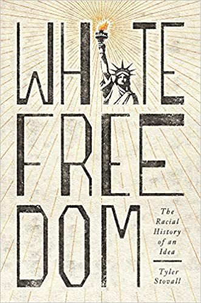

I have just finished reading Tyler Stovall's White Freedom and this post is to recommend it wholeheartedly. I first became aware of it on Marshall Poe’s excellent New Books Network via this podcast.A striking fact about the political thought in the 18th-century is the way in which ideas of freedom and political equality – much of them dramatically advanced in the French and American Revolutions – coincided not just with far more vicious racial oppression but with industrialised race-based chattel slavery. This was surely the very opposite of what one would imagine Enlightenment ideals were all about. You know the drill – We hold these truths to be self-evident, that all men are created equal, that they are endowed by their Creator with certain unalienable Rights.
It’s true that the founding fathers were anxious about slavery – and understood it as a compromise with the high ideals of the declaration of independence. And it tore the place apart over the next century. But is the explanation just economic and psychological – is it just that freeing the slaves just couldn’t be landed in the confederation of states that fought the revolutionary war and the constitutional conventions that followed. This is the traditional interpretation supported by the powerful rhetoric of abolitionists a rhetoric Lincoln increasingly stressed as the strains of the Civil War drove him to the Emancipation Proclamation.
Nevertheless, there's something strange about this interpretation. And White Freedom presents a more plausible interpretation. In a nutshell, it is that Enlightenment freedom was always seen as a European project. And so, given the newly racialised Enlightenment science of humanity, it was a white project. Freedom was white freedom
Freedom was conceived of – as I would imagine it must be conceived of – as a cultural project. That is because freedom cannot be built except by citizens who accept it as a burden taken on for its overall advantages. The social project of freedom involves individuals subordinating their interests to that of others on appropriate occasions.
The author then shows us the emergence of a new kind of ‘shadow’ or fugitive freedom which began to be articulated at the same time – we can call it fugitive, immature, transgressive freedom. Pirates and children emerge in this period sentimentalised in European culture. Pirates live free with parrots on their shoulders, peg legs and eye-patches on their eyes (OK the parrots mostly came later, but a preoccupation with the swashbuckling of pirates does date from the Enlightenment period). Likewise children are newly sentimentalized. They lose their status as apprentice adults and instead become inhabitants of a naïve and charming world which nevertheless cannot be sustainably free of its own accord because it cannot take on the burden – the white man’s burden – of responsibility for the whole.
In this context the black ‘races’ are conceived of as a cultural ‘other’. They are also childlike – requiring the same kind of paternalistic oversight as children – though without the fondness that elders have for their children. The book then takes the reader through the adventures of race in the 18th and 19th century and reveals new aspects of familiar events. It shows how profoundly the ‘freedom’ and ‘liberty’ that keep turning up in political propaganda actually presupposed European and by implication white freedom. Thus for instance the discussion of the whitening of the statue of liberty is fascinating.
The final parts of the book I found rather disappointing. It seems to me that there’s been a profound transition from vicious racism of the pre-civil rights period to a situation where the preponderant majority of people are not viciously racist and are, at a conscious level, well intentioned even if they can be faulted in various ways. And yet progress seems to have stalled to a substantial extent.
It’s not that the author’s concept of White Freedom becomes irrelevant at this stage, but I think the way it is thought about and deployed needs careful reformulation. I don't think that happens in the book. I have a few ideas in that regard, but they’re difficult to articulate, and I’d probably make a fool of myself if I tried to do so without lots more time and effort than I can manage here. Sadly, one has to tread carefully here for fear of being misunderstood – especially with the help of those who take it upon themselves to help people misunderstand your views and your motives.
Be that as it may, pointing to ‘Islamophobia’ as a demonstration of the continuing relevance of the idea of white freedom in the wake of the September 11 attacks, doesn’t seem to me to establish much. It is pretty obvious that if thousands of innocent citizens of a country are being slaughtered by people of an identifiable ideology which itself has overtones of religious bigotry and racism itself, this will enter the popular consciousness in a way that brings forth bigotry and racism. At this point, invoking the concept of ‘White Freedom’ says no more than what we already know – that human beings are well armed with the capacity towards hostility to outgroups especially where outgroups show their hostility to them.
All that having been said the book’s conclusion some to some extent settled my mind on what a great book it was. In contrast to a lot of what one reads, the author is my kind of historian which is to say that he withholds gratuitous judgement. This is not because he's detached from the issues – far from it – but because he's trying to understand them and help you understand them. So he's being like a well mannered and skilful host in showing you things in such a way as to maximise your own capacity to judge. The conclusion of the book, which I reproduce below, captures this very well. I replicate it for your enjoyment. I thought it was magnificent.
As I noted earlier in this chapter, historians are not seers, and I certainly have neither the obligation nor the ability to predict the future. Rather, in this final section I would like to speculate on possible implications of White Freedom for the world we live in today and tomorrow. This book has addressed and explored a major question in the modern world, the relationship between liberty and race, and I wish to conclude with some thoughts about how people might continue to approach (or not) this relationship. The fact that this question has come up time and time again over the last two hundred years suggests, to me at least, that it will continue to do so for some time to come.
We inhabit a world that is, at least formally, committed to racial equality as part of the democratic ideal. One should immediately note that modern societies frequently betray or fail to meet this standard, and the continued existence of white freedom as a social and political reality is an important part of that failure. Nonetheless, the idea that freedom is a universal value transcending race is now the default standard in modern societies, and it is hard to imagine that changing anytime soon. The powerful movements described in chapter 6 against white freedom [the civil rights movement and its epiphenomena] did not succeed completely, and they provoked a powerful counterreaction that is still in evidence today. They did, however, permanently shift the goalposts of the game, a great accomplishment that we must never forget. Thanks to them, and to many others over the years who have struggled for racial equality, the primary question surrounding the relationship between race and freedom today is not so much how to challenge white freedom as how to make the reality of universal liberty live up to the ideal.
I would also observe that, except perhaps for some believers in libertarianism and anarchism, freedom has generally not been an end in and of itself. Rather, freedom enables us to do and enjoy things that all peoples value: live in security and peace, have adequate food and shelter, enjoy our friends and families, raise our children with confidence for their futures. I say this to make the point that the politics of white freedom has never been just about race, but it advocates racial distinction and white privilege as a way of achieving those ends. The rise of the New Right in the late twentieth century and of authoritarian populism today certainly has a major racial dimension, but is not just about race: many supporters of Trump and Brexit (including many non-white supporters) did not cast their votes in favor of bigotry. Today the push for white freedom is in many ways a response to the inability of modern societies to provide those achievements listed above that freedom was supposed to ensure, and as long as that remains the case, racialized visions of liberty will retain their ability to inspire and motivate those searching for a better life.
For me, therefore, the ultimate question is not so much whether racism will disappear and the universal vision of freedom triumph. Rather, it is whether future societies will overcome the need for white freedom by assuring a good life for all their members. Will the conditions that drive many to embrace a racialized vision of liberty melt away as a result? In a world that embraces racial equality in theory, whiteness is ultimately untenable, a burden as well as a privilege. In the last analysis, will we find a way to free our societies from the need for whiteness? A utopian vision, perhaps, but so much that has been considered utopian in the present has become reality in the future. The clarion call of the French Revolution for liberty, equality, and fraternity still rings true, especially if we consider not just these values in general but the relationship between them in particular.
I hope that historians of the future will be able to answer these questions, but it won’t be until long after we are gone. At that point, they will then doubtless come up with new questions that we can’t imagine. In the present, we must therefore content ourselves with posing them, with measuring how far we have come and considering the possible shapes of the road ahead. The history of white freedom considers the best and the worst of the human experience, its highs and lows, and the relationship between them. It is both a sobering tale and one full of hope, and if the past is a guide I consider myself justified in believing that hope will prevail in the future.
Having written a marvellous book, White Freedom, Tyler Stovall enjoys some downtime.
Sounds like he's got his assumptions wrong to me and his book is an outgrowth of the wrong starting assumption.
My understanding is that the default human state is tribal. It is my gang against everyone else. Starting from that assumption, you have to explain how the other is not slaughtered by the preponderant power, how tribalism is overcome. It's completely unremarkable that your in-group wasn't granted the same privileges -- it's, however, very remarkable that these privileges are extended to others not part of your initial in-group.
Judaism is remarkably egalitarian -- imagine a king being under a single god needing to follow the same rules as everyone else! The audacity!
Christianity spread that cultural innovation to everyone who wasn't one of the chosen people.
Analogously, yes, notions of freedom spread among "white" people first. Call that the Judaic phase of freedom.
Then the circle grew and spread out to everyone. Let's call this the Christian phase of freedom.
But this is how all innovations happen. They start in small groups. Then, where possible, it spreads to others.
I'm completely lost as to why you'd begin what you have said by saying "he’s got his assumptions wrong to me and his book is an outgrowth of the wrong starting assumption". What assumptions?
I have to admit to a degree of hostility to your kind of reaction – assuming you have some respect for me (explaining why you read my review, but my assumption may be wrong) – why would I and the author be so trivially wrong?
I apologise for you thinking there was any disrespect in what I wrote. I certainly didn't intend that.
But the idea in that book, judging by your review, is that the universal values espoused were not applied universally, and were first applied only to "white" people.
Well, my contention is that innovation in behavioural rules generally are only applied to a particular group to begin with. I consider that a part of human nature. I don't consider it surprising that rules weren't applied to the out-group.
This applies even to criminal organisations. The expression "thick as thieves" is an outgrowth of this notion of a set of rules applying to an in-group.
The wonder in the spread of "white" freedom is that the circle of who is considered as part of the in-group and can be granted or expect this freedom has expanded as much as it has, beyond the original in-group.
And I would also argue that "white" freedom did expand beyond the in-group because of capitalism and the expansion of the economic pie no longer being as much a zero-sum game.
Again, I apologise for what I said being construed as disrespectful, and I hope this response goes some way to explaining what I mean by different starting assumptions.
As my starting assumption is groups of humans don't apply rules to the out-group, I am not surprised that Enlightenment values only applied to "white" people and not the out-group.
(I also say "white" people because "white" itself is a category that annoys me greatly. I've spent my whole life in Australia being a wog, and the change of late to re-categorise me as "white" I find ridiculous -- I was never consulted about what category I am a part of!)
Thanks – I didn't take it personally. So no need to apologise. It just seemed to me that you were wasting your time by not doing yourself the favour of trying to understand what the author was getting at before disagreeing with them.
From what you say it sounds like you're somehow wanting the author to address some hobbyhorse of yours about the innate tribalism of humangos. I'm on board with it. He probably is too. But his book is a book of cultural history, not contemporary evolutionary psychology.
He doesn't address the question "are humangos inherently tribal or not", but I expect if he was invited onto a Radio National program, or onto Sam Harris's podcast, he could respond and we'd learn something about what he thinks about that. But my guess is that he's a modest and circumspect man and I doubt his heart would be in it.
At least as far as the subject of the book is concerned, you seem to be more on the side of what the author is saying than the side he's critiquing.
I hate pretty much all the things you seem to be objecting to. It's one of the reasons I like and recommend the book.
It's worth noting that during the French revolutionary period, and for some time into the Bonapartist takeover, the ideals of freedom were clearly thought of by very many as applying to black and part black people. Dumas père et fils, Bridgetower, various distinguished officers in the post-Revolutionary army...the Saint-Dominguen people who entered education in France and who entered fully into European life...these were enabled by the plain and widespread view that freedom was not for only some (Whites), but for all (of all races). The sort of 'White freedom' view, and its various cobbled together justifications, was probably a strand quite early on; and it gained strength under the openly racist Bonaparte. But it wasn't inherent, or general, in the enlightenment and revolutionary ideas about liberty. Toussaint regarded himself as French and regarded his ideas as part of the European mainstream. Eliminating slavery was contentious, but clearly an important part of the revolutionary mainstream. The failed attempts to retake (French) or take (English) what became Haiti, the failure to reinstate slavery there, and the final inglorious viciousness towards Toussaint, do not justify treating 'White freedom' as a plausible delimitation of the general enlightenment and revolutionary thought about liberty.
The word "freedom" has numerous meanings, from the well defined, in the degrees of freedom of a system in chemical thermodynamics, to the rhetorical. During the American revolutionary period its meaning was rhetorical. "Freedom" was the rallying cry of the early American bourgeoisie in their battle to end to compulsory remittances to the King across the Atlantic. To black Americans it meant abolition of slavery. In the liberty versus necessity discussion in philosophy, it means that a human can act in ways that can never be predicted. The last meaning is used to befuddle people out of the suspicion that their way of life has been shaped by salesmen. It is no surprise that such a word means different things to different people.
Thanks Christopher,
There was that strand of French thought. It's interesting to me that it was French and (correct me if I'm wrong) much less prevalent in English speaking societies (this is different to sympathy with the slaves). This seems to be part of the more rationalistic approach of the French, and the more 'empiricist' and 'muddling through' nature of English speaking thought.
As a slightly related aside, Adam Smith was greatly exercised about the evils of slavery and also much less well inclined towards the view of black inferiority than his friend David Hume.
Here he is:
However, I'm unaware of him expressing a political view on abolitionism.
Nicholas does the author deal with European attitudes towards north Asia and its peoples? Suspect that would be a more ambiguous area. For an example in around 1904-5 the Japanese easily sank the entire eastern ,plus a fair bit of the western ,Russian fleet in next to no time for little loss to themselves.
yes, I have a similar attitude to history re-writing, but I accept Nick's assertion that the book does not make these mistakes.
Nick's attempt at solutions are interesting but they do raise this notion of whether a non-tribal human is actually possible. If it is not, and I tend to think it is not, then we're into optimal tribe territory, plus an optimal ecology of tribe formation.
Thanks Paul,
I've got no designs on coming up with a post-tribal human. So we probably agree. I do think that the course of civilisation gives us a goal which is to try to find ways to be a little less tribal and also to be able to have meta-tribes or whatever arrangements we need to tackle larger scale problems.
In the grand scheme of things – which is to say if your frame of reference is centuries not years, that project has been going relatively well – at least until the last five years or so. Nested federal structures work reasonably well. But it's always a cultural labour.
I'm not sure what you're referring to when you refer to "Nick's attempted solutions". I was unaware of any in this post or in other posts that are particularly relevant to these issues.